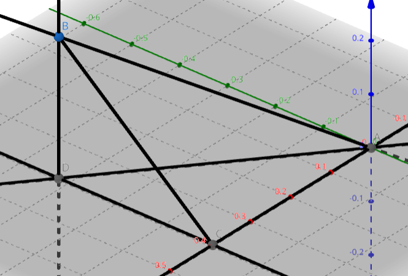

高妙二轮复习
临界知识整理
代数
换底公式
证明：，，，即 ，即得 ，证毕。
教材以习题形式给出，我还一直以为是定理。
积化和差
和差化积与积化和差
理论上是非高考考点，但作为三角恒等变换的有力工具，和差化积、积化和差可以灵活地在和与积两种形式间转换，可以用来解决很多问题。
证明都可以通过和差角公式化简证明，背诵这些公式的主要目的是加速计算。
海伦公式
记 即半周长，则
等差数列结论
等差数列 的二次函数写法 (用 表示) 若有常数项，则首项很可能不符合通项公式。
为等差数列，公差为
奇偶项和的性质：记 为偶数项、奇数项的和， 对于项数为 的等差数列，有 ， 对于项数为 的等差数列，有 ，
等比数列结论
为等比数列，公比为
定比分点坐标公式
其实就是向量的小公式。
已知点 分 所成的比为 ，即 ，设 ，有
三角形重心坐标公式
三角形重心坐标公式？ 考虑使用向量推导。
立体几何
三垂线定理
其实是三余弦定理的特化。
在平面内的一条直线，如果它与过该平面的一条斜线的射影垂直，则其与该斜线也垂直。
三垂线定理逆定理：在平面内的一条直线，与过该平面的一条斜线垂直，则其与该斜线在该平面内的射影垂直。
似乎不是教材内容，需要证明。
证明是很平凡的，考虑取斜线上任意一点作平面的垂线，该垂线垂直于平面内任意直线。而一条直线与斜线射影垂直，其又于斜线所作的垂线垂直，则其与斜线与其射影构成的平面垂直。
这个定理还是很直观的。
三棱锥中的一些结论
四面体 中，设顶点 在底面 上的射影为 .
若 或 、、 与底面所成角相等，则 为底面 的外心。 直接使用勾股定理就能证明。
若 ，，则 为底面 的垂心，同时也有 即四面体中若有两组对棱相互垂直，则任何顶点在与之相对面上的射影都是该面三角形的垂心，且第三组对棱也相互垂直） 特殊地，若 、、 两两垂直，也有一样的结论。
若 在 内部，且 到 三边距离相等，或侧面 、、 与底面所成的二面角相等，则 为底面 的内心。 若 不在 内部，则为 的旁心（两条外角平分线和一条内角平分线的交点）
三余弦定理
与平面所成角为 ， 在平面内， 与 的射影 所成角为 ，，则有 可以记为：一点发出三条射线，最大所成角余弦值为两个小角余弦值之积。
当 与射影垂直时，，因此 ，即得三垂线定理。
教材上没有，需要证明。
https://www.geogebra.org/m/utqsrwxk
如图， 在平面上投影为 ，作 ，连接 由三垂线定理有 ，因此 而 ，，相乘即证毕。
面积射影法
面积射影公式：，其中 为平面角大小。
其他
从一点 出发的三条射线 、、，若 ，则点 在平面 上的射影在 的角平分线上。
如果两个香蕉平面都与第三个平面垂直，那么它们的交线也垂直于第三个平面。
若长方体的体对角线与过同一顶点的三条棱所成角分别为 、、，则 若长方体的体对角线与过同一顶点的三侧面所成角分别为 、、，则
空间任意点 与不共线三点 ，则 是 四点共面的充要条件。 简证：，即得 四点共面。